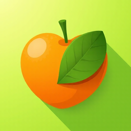

Publica lo que te sobra y encuentra lo que ofrece tu zona
Fruta, verdura, huerto, plantas y despensa: se vende a precio orientativo, se regala o se intercambia, y se acuerda por chat.
Actualizado el
Próximamente en el App Store, para iPhone y iPad
Qué es FreshMatch
FreshMatch pone en contacto a personas de una misma zona para que no se desperdicie lo que sobra. Quien tiene excedentes (fruta, verdura, productos del huerto, plantas, productos de despensa y otros) los publica con fotos; quien está cerca los ve ordenados por distancia, escribe por chat en tiempo real y acuerda el trato: venta a un precio orientativo, regalo o intercambio. Al cerrar el trato, las dos personas se valoran y se suman los kilos salvados.
FreshMatch solo pone en contacto a las personas usuarias. No interviene en los tratos, los pagos ni las entregas, y cada persona responde de lo que publica, vende, regala o intercambia. Está prohibido lo ilegal (drogas, armas, medicamentos, tabaco) y el contenido ofensivo; las denuncias se atienden en un máximo de 24 horas.
Cómo funciona
- Publica tus excedentes: Elige la categoría (frutas, verduras, huerto, plantas, despensa u otros), añade hasta 4 fotos, la cantidad y si lo vendes (con un precio orientativo), lo regalas o lo cambias. Cada excedente dura 30 días y puedes renovarlo, pausarlo o marcarlo como agotado.
- Encuentra lo que hay cerca: La lista se ordena por distancia dentro del radio que elijas, con búsqueda y filtros por categoría y modalidad. Puedes guardar favoritos. Si prefieres no dar la ubicación del móvil, eliges tu ciudad a mano.
- Chat en tiempo real con avisos: Escribe al autor desde el excedente y habla con él en una conversación privada, con avisos push cuando te escriban (la app te pregunta antes de activarlos).
- Trato hecho y valoraciones: Al cerrar el trato, las dos personas se valoran de 1 a 5 estrellas con un comentario opcional. Cada perfil muestra sus valoraciones, los tratos hechos y los kilos salvados.
- Denunciar y bloquear: Puedes denunciar un excedente o a una persona y bloquear a cualquiera desde su perfil: deja de ver tus excedentes y no puede escribirte.
Gratis y Pro
Se descarga gratis y funciona con anuncios de Google AdMob: un banner abajo, un anuncio al abrir la app (1 de cada 4 aperturas, nunca la primera) y un anuncio que se ve para publicar un excedente. FreshMatch Pro, por suscripción mensual o anual de la App Store (1,99 € al mes o 14,99 € al año en España; en otros países verás el precio local en la app antes de pagar), con 7 días de prueba gratis, quita los tres anuncios. Se renueva sola salvo que la canceles al menos 24 horas antes de que acabe el periodo, en Ajustes › tu nombre › Suscripciones del iPhone. El Pro está en Ajustes › FreshMatch Pro, junto a «Restaurar compras».
Plataformas
Funciona en iPhone y iPad con iOS o iPadOS 15 o posterior y necesita conexión a internet. Idiomas de la app: español (de España y de Latinoamérica), inglés, portugués de Brasil, alemán, francés, italiano, japonés y coreano.
Tus datos
No se pide correo ni contraseña: al abrir la app se crea una cuenta anónima ligada a tu móvil y solo eliges un nombre o apodo, que es lo que verán los demás. Si borras la app o cambias de móvil, empiezas de cero; el Pro se recupera con «Restaurar compras». Tu ubicación se redondea a unos 1 000 metros: nunca guardamos ni enseñamos la exacta, y a los demás solo les mostramos tu ciudad y una distancia aproximada. Los datos se guardan con Supabase, en servidores de la Unión Europea, y puedes borrar tu cuenta tú mismo desde Ajustes. Lo cuenta todo la política de privacidad.
Qué no hace
- No gestiona pagos ni entregas: lo que se acuerde, se acuerda directamente entre las personas.
- No comprueba lo que se publica ni garantiza su calidad, su estado, su legalidad ni que cada persona sea quien dice ser.
- No permite publicar lo que la ley no admite entre particulares: drogas, armas, medicamentos ni tabaco.
- No enseña tu ubicación exacta a las demás personas.
- No funciona sin internet: las listas y los chats se cargan desde el servidor.
Preguntas frecuentes
¿Qué puedo publicar en FreshMatch?
Excedentes de fruta, verdura, productos del huerto, plantas, productos de despensa y otros, para vender a un precio orientativo, regalar o intercambiar. Cada persona responde de lo que publica; está prohibido lo ilegal (drogas, armas, medicamentos, tabaco) y el contenido ofensivo.
¿Cómo se hace el pago y la entrega?
FreshMatch no gestiona pagos ni entregas. Los precios son orientativos y lo que se acuerde, se acuerda por chat directamente entre las personas implicadas.
¿Cómo ven mi ubicación los demás?
No la ven. La app redondea tu ubicación a unos 1 000 metros y a las demás personas solo les enseña tu ciudad y la distancia aproximada, por ejemplo «a 3 km». Si no quieres dar la ubicación del móvil, puedes elegir tu ciudad a mano.
¿Qué son los kilos salvados?
Al cerrar un trato se puede indicar los kilos que se han aprovechado. Se suman en el perfil, junto con los tratos hechos y las valoraciones.
¿Con qué anuncios funciona y qué quita Pro?
Sin Pro hay un banner, un anuncio al abrir la app (1 de cada 4 aperturas, nunca la primera) y un anuncio que se ve para publicar un excedente. FreshMatch Pro quita los tres; cuesta 1,99 € al mes o 14,99 € al año en España y incluye 7 días de prueba gratis.
¿Necesito correo o contraseña?
No. Al abrir la app por primera vez se crea sola una cuenta anónima ligada a tu móvil; solo escribes un nombre o apodo y aceptas las condiciones. Si borras la app o cambias de móvil, empiezas de cero; si eras Pro, lo recuperas con «Restaurar compras».
¿Cómo borro mi cuenta?
Desde la propia app: Ajustes › Borrar mi cuenta. Se eliminan tu perfil, tus excedentes, tus fotos, tus conversaciones, tus mensajes y tus valoraciones. No hace falta pedirlo a soporte.
¿Cuántos años hay que tener?
Al menos 16. Si descubrimos que una cuenta es de una persona menor de esa edad, la cerramos.
¿Dudas o ideas? Escribe a gabrielmicovictoria@gmail.com o mira la ayuda y soporte.